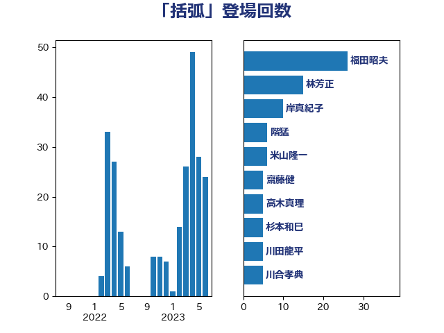

単語「括弧」

| 福田昭夫 | 立憲民主党 | 26 回 |
| 林芳正 | 自由民主党 | 15 回 |
| 岸真紀子 | 立憲民主党 | 10 回 |
| 階猛 | 立憲民主党 | 6 回 |
| 米山隆一 | 立憲民主党 | 6 回 |
| 齋藤健 | 自由民主党 | 5 回 |
| 高木真理 | 立憲民主党 | 5 回 |
| 杉本和巳 | 日本維新の会 | 5 回 |
| 川田龍平 | 立憲民主党 | 5 回 |
| 川合孝典 | 国民民主党 | 5 回 |
| 田村まみ | 国民民主党 | 4 回 |
| 梅村みずほ | 日本維新の会 | 4 回 |
| 徳永久志 | 無所属 | 4 回 |
| 金子道仁 | 日本維新の会 | 3 回 |
| 石川大我 | 立憲民主党 | 3 回 |
| 寺田稔 | 自由民主党 | 3 回 |
| 高市早苗 | 自由民主党 | 2 回 |
| 荒井優 | 立憲民主党 | 2 回 |
| 石井苗子 | 日本維新の会 | 2 回 |
| 武井俊輔 | 自由民主党 | 2 回 |
| 森屋隆 | 立憲民主党 | 2 回 |
| 本村伸子 | 日本共産党 | 2 回 |
| 山本太郎 | れいわ新選組 | 2 回 |
| 小西洋之 | 立憲民主党 | 2 回 |
| 寺田学 | 立憲民主党 | 2 回 |
| 古賀之士 | 立憲民主党 | 2 回 |
| 佐藤正久 | 自由民主党 | 2 回 |
| 伊藤岳 | 日本共産党 | 2 回 |
| 鬼木誠 | 立憲民主党 | 1 回 |
| 高良鉄美 | 無所属 | 1 回 |
| 高橋光男 | 公明党 | 1 回 |
| 高木かおり | 日本維新の会 | 1 回 |
| 鈴木貴子 | 自由民主党 | 1 回 |
| 鈴木敦 | 国民民主党 | 1 回 |
| 鈴木宗男 | 日本維新の会 | 1 回 |
| 逢坂誠二 | 立憲民主党 | 1 回 |
| 赤池誠章 | 自由民主党 | 1 回 |
| 落合貴之 | 立憲民主党 | 1 回 |
| 自見はなこ | 自由民主党 | 1 回 |
| 竹詰仁 | 国民民主党 | 1 回 |
| 空本誠喜 | 日本維新の会 | 1 回 |
| 穀田恵二 | 日本共産党 | 1 回 |
| 稲津久 | 公明党 | 1 回 |
| 神津たけし | 立憲民主党 | 1 回 |
| 石垣のりこ | 立憲民主党 | 1 回 |
| 田村智子 | 日本共産党 | 1 回 |
| 田中健 | 国民民主党 | 1 回 |
| 河野義博 | 公明党 | 1 回 |
| 河野太郎 | 自由民主党 | 1 回 |
| 水岡俊一 | 立憲民主党 | 1 回 |
| 櫻井周 | 立憲民主党 | 1 回 |
| 横沢高徳 | 立憲民主党 | 1 回 |
| 榛葉賀津也 | 国民民主党 | 1 回 |
| 梅村聡 | 日本維新の会 | 1 回 |
| 東徹 | 日本維新の会 | 1 回 |
| 村田享子 | 立憲民主党 | 1 回 |
| 末松信介 | 自由民主党 | 1 回 |
| 山岸一生 | 立憲民主党 | 1 回 |
| 小沼巧 | 立憲民主党 | 1 回 |
| 安江伸夫 | 公明党 | 1 回 |
| 太田房江 | 自由民主党 | 1 回 |
| 大西健介 | 立憲民主党 | 1 回 |
| 國場幸之助 | 自由民主党 | 1 回 |
| 吉良州司 | 無所属 | 1 回 |
| 吉田はるみ | 立憲民主党 | 1 回 |
| 前川清成 | 日本維新の会 | 1 回 |
| 伊佐進一 | 公明党 | 1 回 |
| 井坂信彦 | 立憲民主党 | 1 回 |
| 中西祐介 | 自由民主党 | 1 回 |
| 三木圭恵 | 日本維新の会 | 1 回 |